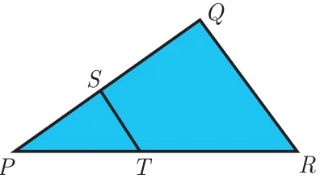
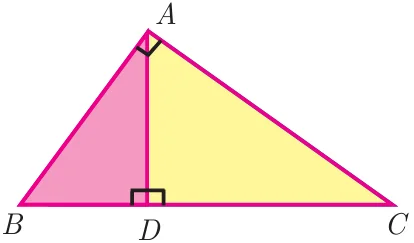
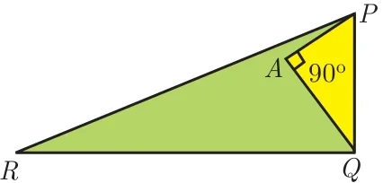
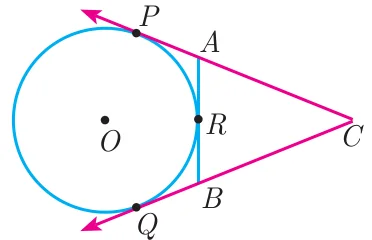
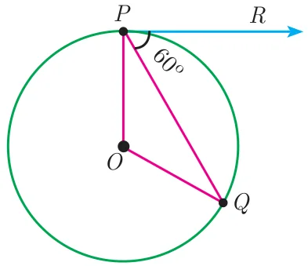

Exercise 4.5
Multiple choice questions
- If in triangles \(ABC\) and \(EDF\), \(\dfrac{AB}{DE} = \dfrac{BC}{FD}\) then they will be similar, when
- \(\angle B = \angle E\)
- \(\angle A = \angle D\)
- \(\angle B = \angle D\)
- \(\angle A = \angle F\)
- In \(\Delta LMN\), \(\angle L = 60^\circ\), \(\angle M = 50^\circ\). If \(\Delta LMN \sim \Delta PQR\) then the value of \(\angle R\) is
- \(40^\circ\)
- \(70^\circ\)
- \(30^\circ\)
- \(110^\circ\)
- If \(\Delta ABC\) is an isosceles triangle with \(\angle C = 90^\circ\) and \(AC = 5\) cm, then \(AB\) is
- 2.5 cm
- 5 cm
- 10 cm
- \(5\sqrt{2}\) cm
- In a given figure \(ST \parallel QR\), \(PS = 2\) cm and \(SQ = 3\) cm. Then the ratio of the area of \(\Delta PQR\) to the area of \(\Delta PST\) is

- 25 : 4
- 25 : 7
- 25 : 11
- 25 : 13
- The perimeters of two similar triangles \(\Delta ABC\) and \(\Delta PQR\) are 36 cm and 24 cm respectively. If \(PQ = 10\) cm, then the length of \(AB\) is
- \(6\frac{2}{3}\) cm
- \(\dfrac{10\sqrt{6}}{3}\) cm
- \(66\frac{2}{3}\) cm
- 15 cm
- If in \(\Delta ABC\), \(DE \parallel BC\). \(AB = 3.6\) cm, \(AC = 2.4\) cm and \(AD = 2.1\) cm then the length of AE is
- 1.4 cm
- 1.8 cm
- 1.2 cm
- 1.05 cm
- In a \(\Delta ABC\), \(AD\) is the bisector of \(\angle BAC\). If \(AB = 8\) cm, \(BD = 6\) cm and \(DC = 3\) cm. The length of the side \(AC\) is
- 6 cm
- 4 cm
- 3 cm
- 8 cm
- In the adjacent figure \(\angle BAC = 90^\circ\) and \(AD \perp BC\) then

- \(BD \cdot CD = BC^2\)
- \(AB \cdot AC = BC^2\)
- \(BD \cdot CD = AD^2\)
- \(AB \cdot AC = AD^2\)
- Two poles of heights 6 m and 11 m stand vertically on a plane ground. If the distance between their feet is 12 m, what is the distance between their tops?
- 13 m
- 14 m
- 15 m
- 12.8 m
- In the given figure, \(PR = 26\) cm, \(QR = 24\) cm, \(\angle PAQ = 90^\circ\), \(PA = 6\) cm and \(QA = 8\) cm. Find \(\angle PQR\)

- \(80^\circ\)
- \(85^\circ\)
- \(75^\circ\)
- \(90^\circ\)
- A tangent is perpendicular to the radius at the
- centre
- point of contact
- infinity
- chord
- How many tangents can be drawn to the circle from an exterior point?
- one
- two
- infinite
- zero
- The two tangents from an external points \(P\) to a circle with centre at \(O\) are \(PA\) and \(PB\). If \(\angle APB = 70^\circ\) then the value of \(\angle AOB\) is
- \(100^\circ\)
- \(110^\circ\)
- \(120^\circ\)
- \(130^\circ\)
- In figure \(CP\) and \(CQ\) are tangents to a circle with centre at \(O\). \(ARB\) is another tangent touching the circle at \(R\). If \(CP = 11\) cm and \(BC = 7\) cm, then the length of \(BR\) is

- 6 cm
- 5 cm
- 8 cm
- 4 cm
- In figure if \(PR\) is tangent to the circle at \(P\) and \(O\) is the centre of the circle, then \(\angle POQ\) is

- \(120^\circ\)
- \(100^\circ\)
- \(110^\circ\)
- \(90^\circ\)